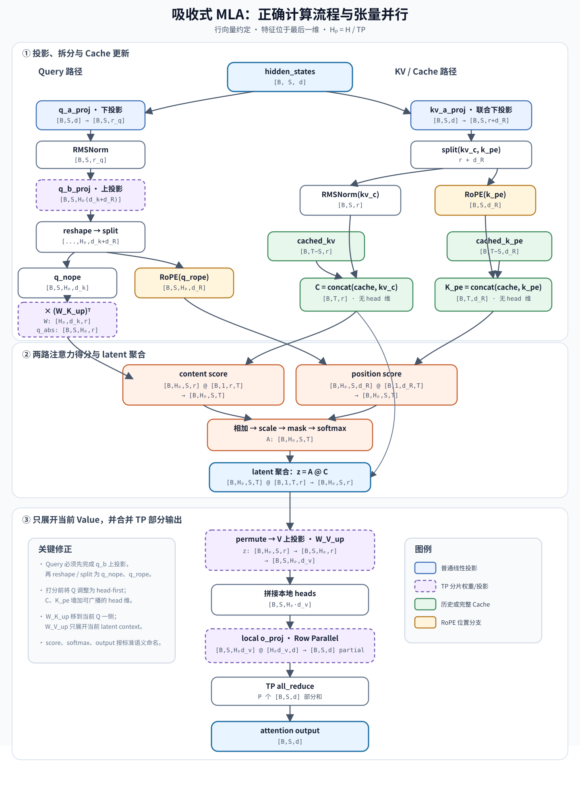

MLA 的矩阵吸收算法：从直觉到公式与伪代码¶
本文中的 MLA 指 DeepSeek-V2 提出的 Multi-Head Latent Attention（多头潜在注意力）；“吸收”指推理时的 weight absorption / matrix absorption（权重或矩阵吸收）。
阅读目标：理解 MLA 为什么只缓存一个低维 latent，K 投影怎样被移到 Q 一侧，V 投影怎样被移到输出一侧，以及 RoPE 为什么必须单独处理。
阅读前置¶
本文重点讲解 MLA 的矩阵吸收过程。阅读本文前，建议先参考下面的概念介绍和代码实现，建立对 MLA 整体结构、低秩压缩和 KV Cache 的基本认识：
0. 先记住一句话¶
MLA 先把每个历史 token 的 K 和 V 共同压缩成一个小向量 c，推理时不再把 c 还原成完整 K、V，而是利用矩阵乘法结合律：
- 把 K 的上投影矩阵移到当前 token 的 Q 上；
- 先用注意力权重对历史
c求和，再做 V 的上投影； - 因而 KV Cache 中只需保存低维
c，以及一个很小的 RoPE key。
这是一种完全等价的线性代数改写，不是近似算法，也不是重新训练或改变注意力权重。
1. 为什么需要 MLA¶
自回归生成第 t 个 token 时，需要让当前 query 访问前面所有 token 的 key 和 value。普通多头注意力（MHA）会缓存每层、每个历史 token、每个头的完整 K 和 V。
设：
H：注意力头数；d_k：每个头的 key 维度；d_v：每个头的 value 维度；T：已经缓存的 token 数；L：层数。
忽略 batch 和数据类型后，普通 MHA 的 KV Cache 元素量约为：
长上下文或大 batch 下，解码经常受显存容量和显存带宽限制，而不是纯算力限制。MLA 的核心目标就是减少每次解码需要保存和读取的历史状态。
2. MLA 先做了什么压缩¶
2.1 本文的行向量约定¶
本文统一把 token 表示成行向量，也就是把特征放在最后一维。一个从 d 维到 r 维的线性映射写为：
这和 PyTorch 张量的布局一致。例如输入形状通常是 [batch, seq_len, d]，线性层作用于最后一维。不过，nn.Linear(d, r) 为了让每一行对应一个输出特征，会把参数保存为转置后的形状：
因此，本文公式里的 \(W\in\mathbb{R}^{d\times r}\) 表示“从输入到输出、放在乘号右侧”的有效矩阵；对应的 PyTorch weight 保存的是 \(W^T\in\mathbb{R}^{r\times d}\)。
如果要和使用列向量的论文对照，可以对等式整体转置。利用 \((AB)^T=B^TA^T\)：
阅读本文时可以采用以下规则，避免混淆：
- 本文全部推导使用行向量，线性映射写成 \(y=xW\)；
- 本文标记的矩阵形状按有效乘法方向书写，即 \(W\) 为
[in, out]； - 对照 PyTorch 时，将本文的 \(W\) 替换为
module.weight.T； - 对照列向量论文时，将向量和整个等式转置，不要只改变某一个矩阵。
2.2 低秩 KV 联合压缩¶
下面暂时忽略 RoPE。
对第 j 个 token 的隐藏状态 \(h_j\in\mathbb{R}^{1\times d}\)，MLA 先做一次 KV 联合下投影：
其中 r 是 KV latent 的维度，远小于所有头的完整 K、V 总维度。在 PyTorch 中，对应参数 w_dkv.weight.shape == [r, d]，计算为 c_j = h_j @ w_dkv.weight.T。
对第 i 个头，再分别把同一个 \(c_j\) 上投影为 key 和 value：
直观上，\(c_j\) 是 K、V 的一份“共同压缩底稿”，不同注意力头用各自的上投影矩阵读取它。
如果只做到这里，虽然可以在 Cache 中只保存 \(c_j\)，但每生成一个 token 都要把全部历史 \(c_1,\ldots,c_T\) 重新展开成 K、V，计算量会很大。“吸收”就是为了避免这次全量展开。
3. K 吸收：把历史 K 的工作移到当前 Q¶
3.1 原来的 content score¶
第 i 个头的当前 query 是 \(q_i\in\mathbb{R}^{1\times d_k}\)。它和第 j 个历史 key 的内容分数为：
根据矩阵乘法结合律：
定义吸收后的 query：
于是：
3.2 它节省了什么¶
未吸收时，对每次解码都可能需要：
吸收后，只需对当前 token 的每个 query做一次变换：
然后让 \(\widehat q_i\) 直接和 Cache 中所有 \(c_j\) 做点积。历史 token 不再被逐头展开成 key。
3.3 “吸收到 Q”有两种实现含义¶
如果 \(q_i=h_tW_i^Q\) 且中间没有非线性运算，可以预先合并权重：
其中 \(W_i^Q\in\mathbb{R}^{d\times d_k}\)，所以 \(\widehat W_i^Q\in\mathbb{R}^{d\times r}\)。
如果 Q 本身也采用低秩投影，例如：
则可以只合并两个上投影：
工程实现也可以不真正生成一份合并后的权重，而是在运行时先算 \(q_i\)，再乘 \((W_i^{UK})^T\)。两者数学含义相同；后者更方便复用、量化和切分原权重。
4. V 吸收：先在 latent 空间加权，再展开¶
设 softmax 后第 i 个头对历史位置 j 的注意力权重是 \(a_{i,j}\)。原来的头输出为：
线性映射对加权和可分配：
先在 latent 空间计算：
再只对当前头的聚合结果展开一次：
这避免了先为全部历史 token、全部头生成 \(v_{j,i}\)。
若输出投影 \(W^O\) 按头分块为 \(W_i^O\in\mathbb{R}^{d_v\times d}\)，最终输出为：
因此还可以预先形成：
也就是把 V 上投影吸收到输出投影。实际内核也可能保留“两次较小矩阵乘”，而不显式保存 \(B_i\)。
注意：这里没有把矩阵“穿过 softmax”。算法先得到与原式完全相同的 logits，再做同一个 softmax；只有 softmax 之后的线性加权和被重新结合。
5. RoPE 为什么不能照搬 K 吸收¶
如果直接给压缩 key 的上投影结果施加 RoPE，那么在行向量约定下可以把位置 j 的旋转写成右乘矩阵 \(R_j\)：
其中 \(R_j\) 是与历史位置 j 有关的旋转矩阵。分数中会出现：
由于 \(R_j^T\) 随位置变化并夹在 Q 与 \((W_i^{UK})^T\) 之间，无法构造一个对所有历史位置都通用的吸收后 query。矩阵乘法有结合律，但通常没有交换律，不能随意把 \(R_j\) 与 \(W_i^{UK}\) 调换。
DeepSeek 的办法是 Decoupled RoPE（解耦 RoPE）：把 Q、K 分成内容分支和位置分支。
- 内容 key：\(k_{j,i}^{C}=c_jW_i^{UK}\)，不施加 RoPE，可以吸收；
- 位置 key：\(k_j^{R}=\operatorname{RoPE}(h_jW^{KR})\)，在各头间共享，单独缓存；
- 位置 query：\(q_i^{R}\) 施加 RoPE，但它只和 \(k_j^{R}\) 点积。
完整 logit（省略 mask）为：
因此每个历史 token、每层只需缓存：
位置 key 不按头复制，是 MLA Cache 很小的另一个重要原因。
6. 一次解码的完整数据流¶
当前隐藏状态 h_t
│
├─> 当前 q_nope ──乘 K 上投影──> q_abs ─────┐
│ │ 与历史 c_cache 点积
├─> 当前 q_rope ─────施加 RoPE───────────────┤ 与历史 pe_cache 点积
│ ▼
├─> 当前 c_t ─────────────────────────────> logits → mask → softmax = A
│ │ │
│ └────────追加到 c_cache │ A @ c_cache
│ ▼
└─> 当前 k_rope ──追加到 pe_cache 每个头的 latent context z_i
│
V 上投影 / 输出吸收
▼
当前层输出
关键的不对称性是：历史信息始终保留在共享 latent 空间；只有当前 query 和 softmax 后的当前 context 按头展开。
7. 工程实例：吸收式 MLA 与张量并行¶

图：吸收式 MLA 工程计算流。Query 在 q_b_proj 上投影之后才执行 reshape/split；绿色节点表示 Cache，紫色虚线节点表示 TP 分片路径。
这张图把前面的数学推导落到了实际推理程序中。可以按以下五步阅读。
本节统一使用以下 shape 符号：
| 符号 | 含义 |
|---|---|
B |
batch size |
S |
本次前向处理的 query token 数；decode 时 S = 1 |
T |
追加本次 token 后的总 Cache 长度 |
d |
模型隐藏维度 |
H |
全局注意力头数 |
P |
Tensor Parallel world size |
H_p = H / P |
每个 TP rank 的本地头数；不使用 TP 时 H_p = H |
r_q |
Query 的低秩 latent 维度 |
r |
KV latent 维度 |
d_c |
每头非位置 Q/K 维度 |
d_R |
每头 RoPE Q/K 维度 |
d_v |
每头 Value 维度 |
张量默认把特征放在最后一维。下面写出的权重 shape 使用本文的行向量有效矩阵 [in, out]；PyTorch nn.Linear.weight 保存的是它的转置 [out, in]。
7.1 Query 分为内容和位置两条路径¶
上图已经按标准 q-LoRA 的逻辑顺序校正 Query 路径。实际推理内核可能融合相邻算子，但等价计算顺序是：
拆分后得到：
q_nope：不携带 RoPE 的内容 query；q_rope：携带位置信息的 query。
内容 query 再与图中的 w_kc 相乘，得到 absorbed_q。这里的 w_kc 对应 K 内容上投影的权重因子，计算语义正是：
因此程序只变换当前 query，不需要把所有历史 latent 逐头展开成完整内容 key。
这一阶段的 shape 变化如下：
| 操作 | 输入与权重 | 输出 shape |
|---|---|---|
| Query 下投影 | [B, S, d] @ [d, r_q] |
[B, S, r_q] |
| RMSNorm | [B, S, r_q] |
[B, S, r_q] |
| 本地 Query 上投影 | [B, S, r_q] @ [r_q, H_p(d_c+d_R)] |
[B, S, H_p(d_c+d_R)] |
| reshape | [B, S, H_p(d_c+d_R)] |
[B, S, H_p, d_c+d_R] |
| split | [B, S, H_p, d_c+d_R] |
q_nope: [B, S, H_p, d_c]；q_rope: [B, S, H_p, d_R] |
| K 吸收到 Q | q_nope: [B, S, H_p, d_c]；\((W^{UK})^T: [H_p,d_c,r]\) |
absorbed_q: [B, S, H_p, r] |
对 q_rope 施加 RoPE |
[B, S, H_p, d_R] |
[B, S, H_p, d_R] |
最后一行可写成：
7.2 KV Cache 保存 latent 和位置 key¶
kv_a_proj 产生两部分：
kv_c：当前 token 的压缩 KV latent；k_pe：当前 token 的位置 key。
它们分别与历史的 cached_kv、cached_k_pe 拼接：
这里的 full 表示“当前 token 加历史 token 后的完整时间序列”，不是已经恢复成所有头的完整 K/V。Cache 中仍然保存紧凑的 latent 和共享位置 key。
令本次前向之前的 Cache 长度为 T - S，这一阶段的 shape 变化为：
| 操作 | 输入与权重 | 输出 shape |
|---|---|---|
| KV 联合下投影 | [B, S, d] @ [d, r+d_R] |
[B, S, r+d_R] |
| split | [B, S, r+d_R] |
kv_c: [B, S, r]；k_pe: [B, S, d_R] |
对 kv_c 执行 RMSNorm |
[B, S, r] |
[B, S, r] |
对 k_pe 施加 RoPE |
[B, S, d_R] |
[B, S, d_R] |
| 拼接 latent Cache | [B, T-S, r] 与 [B, S, r] |
full_kv_nope: [B, T, r] |
| 拼接位置 Cache | [B, T-S, d_R] 与 [B, S, d_R] |
full_kv_rope: [B, T, d_R] |
注意，这两个 Cache 都没有 head 维：KV latent 和位置 key 在各个 query heads 之间共享。
7.3 两路 score 在注意力内核中相加¶
注意力内核接收：
absorbed_q与full_kv_nope，计算内容分数；q_rope与full_kv_rope，计算位置分数。
对应公式为：
两部分相加后再执行 mask、softmax 和对 latent Cache 的加权聚合。
实际内核通常先把 query 布局换成 [B, H_p, S, feature]。Cache 在 head 维上广播，不需要物理复制：
| 操作 | 输入 shape | 输出 shape |
|---|---|---|
| 内容分数 | [B, H_p, S, r] @ [B, 1, r, T] |
[B, H_p, S, T] |
| 位置分数 | [B, H_p, S, d_R] @ [B, 1, d_R, T] |
[B, H_p, S, T] |
| 两路相加并缩放 | 两个 [B, H_p, S, T] |
logits: [B, H_p, S, T] |
| 加 causal/padding mask | logits 与可广播的 mask |
[B, H_p, S, T] |
Softmax（沿 T） |
[B, H_p, S, T] |
A: [B, H_p, S, T] |
对应核心计算为：
q_abs_h = absorbed_q.transpose(1, 2) # [B, H_p, S, r]
q_rope_h = q_rope.transpose(1, 2) # [B, H_p, S, d_R]
score_content = q_abs_h @ full_kv_nope.unsqueeze(1).transpose(-1, -2)
score_position = q_rope_h @ full_kv_rope.unsqueeze(1).transpose(-1, -2)
A = softmax((score_content + score_position) * scale + mask, dim=-1)
7.4 w_vc 只展开当前 latent context¶
Softmax 权重先在 latent 空间中聚合历史信息：
图中的 w_vc 对应 V 上投影。它只作用于当前 token、当前头的聚合结果：
而不是为 Cache 中每个历史 token 生成完整 value。这就是 V 侧重排在工程实现中的体现。
这一阶段的 shape 变化为：
| 操作 | 输入与权重 | 输出 shape |
|---|---|---|
| 在 latent 空间聚合 | A: [B, H_p, S, T]；C: [B, 1, T, r] |
z: [B, H_p, S, r] |
| 调整布局 | [B, H_p, S, r] |
[B, S, H_p, r] |
| V 上投影 | [B, S, H_p, r]；\(W^{UV}: [H_p,r,d_v]\) |
[B, S, H_p, d_v] |
| 拼接本地 heads | [B, S, H_p, d_v] |
[B, S, H_p d_v] |
对应核心计算为：
z = A @ full_kv_nope.unsqueeze(1) # [B, H_p, S, r]
z = z.transpose(1, 2) # [B, S, H_p, r]
head_out = einsum("bshr,hrv->bshv", z, W_v_up) # [B, S, H_p, d_v]
图中统一使用标准注意力语义：内容/位置分数 → softmax → latent 聚合 → V 上投影 → 输出投影。
7.5 张量并行如何切分¶
当使用 Tensor Parallelism（TP）时，可沿注意力头或投影输出通道切分 q_b_proj、w_kc 和 w_vc：
- 每个 TP rank 只生成本地的一组 Q/K/V heads；
- 每个 rank 独立计算本地 heads 的 score、softmax 和 latent context；
- 本地 head 输出经过各自持有的
o_proj分片，得到模型隐藏维度上的部分和； - 所有 TP ranks 通过
all_reduce合并部分结果，得到最终 attention 输出。
这个切分方式保留了吸收式 MLA 的核心优势：历史状态仍以低维 Cache 参与计算，逐头的大张量主要只出现在当前 token 的局部计算中。
以按 head 切分的 TP 为例，全局与本地 shape 的对应关系为：
| 张量或有效权重 | 全局 shape | 单个 TP rank 的 shape |
|---|---|---|
| Query 上投影 | [r_q, H(d_c+d_R)] |
[r_q, H_p(d_c+d_R)] |
| K 上投影 | [H, r, d_c] |
[H_p, r, d_c] |
| V 上投影 | [H, r, d_v] |
[H_p, r, d_v] |
| Head 输出 | [B, S, H, d_v] |
[B, S, H_p, d_v] |
| Output projection | [Hd_v, d] |
[H_p d_v, d] |
输出侧的 shape 流程为：
本地 heads [B, S, H_p, d_v]
→ flatten [B, S, H_p*d_v]
→ local o_proj [B, S, d] （部分和）
→ all_reduce(P ranks) [B, S, d] （完整输出）
这里描述的是图中采用的 head-parallel 方案。由于 latent Cache 本身没有 head 维，具体推理引擎可以选择复制它，也可以结合 sequence/context parallelism 进一步切分；这不由该图单独决定。
8. 接近实现的伪代码¶
下面使用张量库常见的行向量布局。维度约定：
H：头数；T：缓存长度；r：KV latent 维度；d_c：每头非位置 Q/K 维度；d_R：RoPE 维度；d_v：每头 V 维度。
def mla_decode(x_t, c_cache, pe_cache):
# 1. 只为当前 token 生成 query 的两个分支
q_nope = make_q_nope(x_t) # [H, d_c]
q_rope = rope(make_q_rope(x_t)) # [H, d_R]
# 2. 为当前 token 生成需要缓存的两小块状态
c_t = norm(make_kv_latent(x_t)) # [r]
k_rope_t = rope(make_k_rope(x_t)) # [d_R]，各头共享
c_cache.append(c_t) # [T, r]
pe_cache.append(k_rope_t) # [T, d_R]
# 3. K 吸收
# PyTorch 保存的 W_k_up_weight[h] 是公式中 (W_UK[h]).T，形状 [d_c, r]
q_abs = einsum("hd,hdr->hr", q_nope, W_k_up_weight) # [H, r]
# 4. 内容与位置两个分支分别打分
score_content = q_abs @ c_cache.T # [H, T]
score_position = q_rope @ pe_cache.T # [H, T]
logits = (score_content + score_position) / sqrt(d_c + d_R)
A = softmax(apply_causal_mask(logits), dim=-1) # [H, T]
# 5. V 吸收：先在 latent 空间按头聚合
z = A @ c_cache # [H, r]
# 方案 A：先做 V 上投影，再做普通输出投影
# PyTorch 保存的 W_v_up_weight[h] 是公式中 (W_UV[h]).T，形状 [d_v, r]
head_out = einsum("hr,hvr->hv", z, W_v_up_weight) # [H, d_v]
y_t = output_projection(head_out.reshape(H * d_v))
# 方案 B：若按行向量公式预先计算 B[h] = W_UV[h] @ W_O[h]，形状 [r, d]
# y_t = sum_h z[h] @ B[h]
return y_t
官方 DeepSeek-V3 参考实现的非朴素分支正是这个顺序：先将 q_nope 乘 K 上投影、缓存 kv latent 和位置 key、对 latent Cache 计算 logits、用注意力权重聚合 latent、最后才做 V 上投影和输出投影。
9. 一个极小的数值例子¶
只看一个头和 K 吸收。所有向量都按行向量书写，设：
先展开 K¶
把 K 投影吸收到 Q¶
两条路径得到完全相同的 score。差别只是：前者要为每个历史 token 生成 K；后者只变换当前 Q，然后直接读取历史 latent。
V 侧同理。若两个历史 latent 的权重分别为 0.25、0.75，则：
所以只需把两个小 latent 加权成一个，再展开一次。
10. Cache 和计算量怎样变化¶
10.1 Cache 大小¶
如果朴素实现缓存各头完整 K、V，每个 token、每层约为：
吸收式 MLA 每个 token、每层约为：
两者的理论元素量比值为：
DeepSeek-V2 论文用另一组统一符号给出的结论是：MHA 为 \(2Hd_hL\)，MLA 为 \((d_c+d_h^R)L\)；在论文配置中 \(d_c=4d_h\)、\(d_h^R=d_h/2\)，所以 MLA 每层每 token 只保存约 \(4.5d_h\) 个元素，而不是随头数线性增长的 \(2Hd_h\) 个元素。
10.2 代价不是“所有方面都更少”¶
吸收后，content score 的点积维度从每头 d_c 变成 latent 维度 r；当 r > d_c 时，某些矩阵乘法的 FLOPs 可能上升。它的主要收益是：
- 大幅减少 KV Cache 容量；
- 大幅减少每个解码步从显存读取的历史数据；
- 不再为所有历史 token 重建逐头 K、V；
- 允许更长上下文或更大 batch。
所以 MLA 尤其适合通常受显存带宽制约的逐 token 解码。实际速度仍取决于序列长度、batch、GPU、量化方式、张量并行策略和内核实现。Prefill 阶段一次处理很多 query，可能采用与 decode 不同的执行路径。
11. 常见误解与实现陷阱¶
误解 1：吸收是一种新的训练算法¶
不是。它主要是推理阶段对同一计算图的代数重排。MLA 的低秩联合压缩需要在模型训练时学到，但“吸收式执行”本身不改变模型函数。
误解 2：既然只缓存 latent，K、V 就不存在了¶
从数学定义看 K、V 仍然存在；只是推理程序不必把所有历史 K、V 显式物化。它们的线性作用被转移到了计算图的两端。
误解 3：可以把任意算子都吸收¶
只有相邻的线性变换才能直接合并或重新结合。若中间夹有位置相关旋转、激活函数、归一化、截断或其他非线性操作，就不能直接跨过去。MLA 通过解耦 RoPE，专门保留了一条可吸收的内容分支。
为什么Q 的 q_nope/q_rope 必须在上投影之后才 split，而KV 在下投影后 split¶
Q 的 q_nope/q_rope 必须在上投影之后 split，因为二者都是 per-head 的 Query，只有 q_b_proj 后才产生；KV 在下投影后 split 的其实是共享的 compressed_kv 和共享的 k_rope，其中 k_rope 被有意设计成绕过 KV 上投影。至于 compressed KV 本来仍需通过 kv_b_proj 得到 per-head \(K_{nope},V\)，只是 decode 时这些上投影通过 MLA absorption 被移到了 Q/输出侧，所以不必显式生成。
误解 4：矩阵乘法可交换¶
吸收利用的是结合律：
而不是交换律。一般情况下 \(AB\ne BA\)。
实现陷阱¶
- 转置和布局：本文统一使用行向量和
[in, out]的有效矩阵；PyTorch 的nn.Linear.weight保存为[out, in]，对照代码时需要转置。 - 缩放因子：softmax scale 对应完整 Q/K 头维度，即内容维度加 RoPE 维度，而不是吸收后的 latent 维度。
- Cache 内容：如果 KV 下投影后有 RMSNorm，通常应缓存归一化后的 latent；要与训练图保持一致。
- 位置 key 的共享维：解耦 RoPE key 通常不按头重复缓存。
- 量化误差：数学上等价不代表低精度下逐 bit 一致；是否预先合并权重会改变舍入和量化尺度。
- 内核性能：显式生成融合权重未必更快；权重布局、张量并行和专用 kernel 可能更偏好运行时的两步乘法。
12. 建议的理解顺序¶
- 先只看 \(q(cW^{UK})^T=\bigl(q(W^{UK})^T\bigr)c^T\)，彻底理解 K 吸收。
- 再看 \(\sum_j a_jc_jW^{UV}=\left(\sum_j a_jc_j\right)W^{UV}\)，理解 V 吸收。
- 记住 Cache 中保存的是共享 latent，而不是每头 K/V。
- 最后加入 RoPE：内容分支可以吸收，位置分支单独计算和缓存。
- 对照伪代码，找到
q_abs @ c_cache.T和A @ c_cache这两个核心矩阵乘法。
如果只想掌握本质，到这里已经足够：
13. 参考资料¶
- DeepSeek-AI, DeepSeek-V2: A Strong, Economical, and Efficient Mixture-of-Experts Language Model。MLA 的原始论文；重点参见第 2.1 节，尤其是公式 9–19、解耦 RoPE 和 KV Cache 对比。
- DeepSeek-AI, DeepSeek-V3 Technical Report。DeepSeek-V3 延续 MLA 架构。
- DeepSeek-AI, DeepSeek-V3 官方 MLA 参考实现。
MLA.forward同时给出朴素 K/V Cache 路径和 latent Cache 的吸收式路径，可直接对照两种计算顺序。 - DeepSeek-AI, FlashMLA。面向 GPU 的高效 MLA kernel 实现。
附录：符号速查¶
| 符号 | 含义 | 典型形状 |
|---|---|---|
| \(h_j\) | 第 j 个 token 的层输入 |
\(1\times d\) |
| \(c_j\) | K/V 共享压缩 latent | \(1\times r\) |
| \(W^{DKV}\) | K/V 联合下投影 | \(d\times r\) |
| \(W_i^{UK}\) | 第 i 头的 K 上投影 |
\(r\times d_c\) |
| \(W_i^{UV}\) | 第 i 头的 V 上投影 |
\(r\times d_v\) |
| \(q_i^C\) | 第 i 头的非位置 query |
\(1\times d_c\) |
| \(\widehat q_i\) | K 吸收后的 query | \(1\times r\) |
| \(q_i^R\) | 第 i 头的 RoPE query |
\(1\times d_R\) |
| \(k_j^R\) | 各头共享的 RoPE key | \(1\times d_R\) |
| \(a_{i,j}\) | softmax 后的注意力权重 | 标量 |
| \(z_i\) | 注意力权重聚合后的 latent | \(1\times r\) |
| \(W_i^O\) | 第 i 头对应的输出投影分块 |
\(d_v\times d\) |